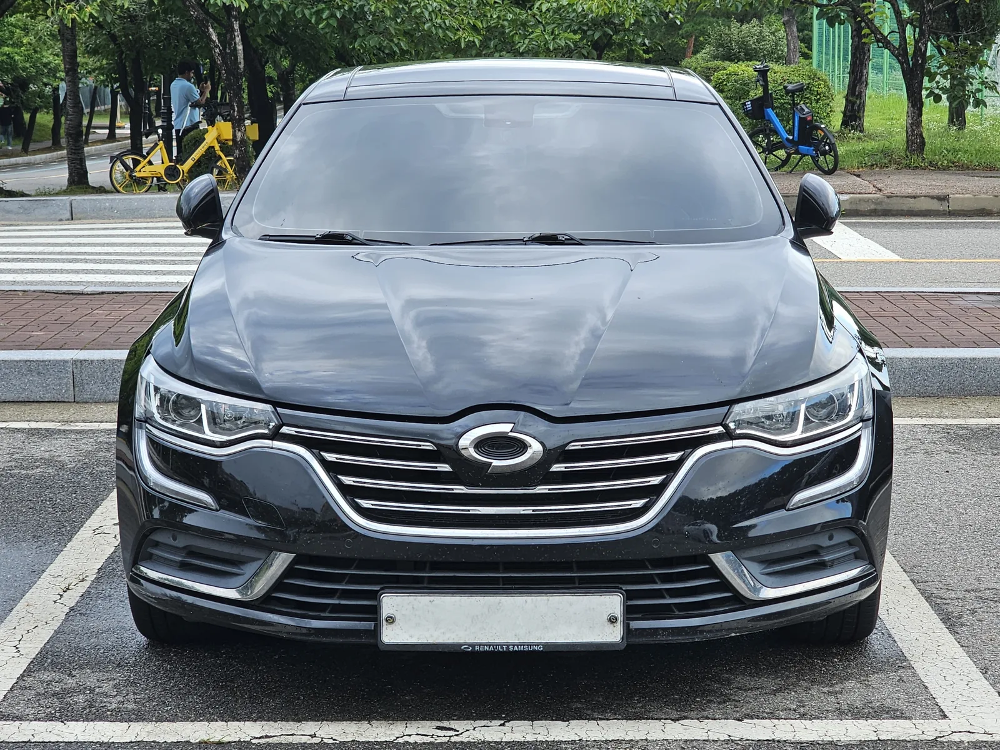
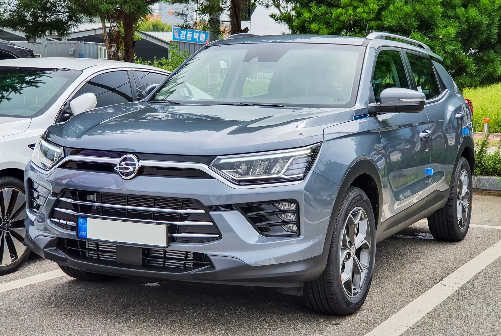
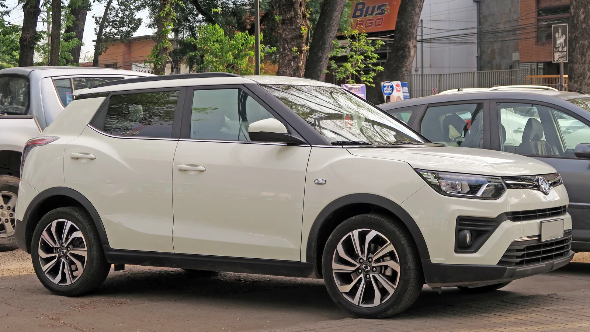

▲ 르노코리아의 준중형 세단 SM6. 2016년 출시 이후 누적 15만 7,000대가 판매됐지만 2025년 3월 생산이 종료되고 12월 공식 단종이 발표됐다 ⓒ Damian B Oh / Wikimedia Commons (CC BY-SA 4.0)
르노코리아 SM6가 단종됐다는 소식이 전해졌을 때, 많은 사람들이 함께 떠올린 것은 차량 자체보다 엠블럼이었다. 방패 모양 안에 소용돌이가 그려진 이 배지는 삼성자동차 시절부터 20년 넘게 쓰여 온 '태풍의 눈'이다. SM6가 역사 속으로 사라지면서 이 엠블럼도 함께 자취를 감추게 됐다. 그런데 단종된 국산차는 SM6 하나가 아니다. 같은 시기 르노코리아 QM6, KGM 코란도와 코란도 EV까지 나란히 단종 수순을 밟았고, KGM 티볼리는 뚜렷한 후속 계획 없이 단종설에 휩싸여 있다. 반대로 5년 전 내수에서 사라졌던 기아 스토닉은 2025년 가을 유럽에서 완전히 새로운 모습으로 돌아왔다.
2025~2026년 국산차 시장에서 실제로 확인된 단종·단종 임박 모델들을 한 번에 정리했다. 각 모델이 왜 사라지는지, 언제 사라졌거나 사라질 예정인지, 그리고 그 자리를 무엇이 채우는지를 실제 보도를 바탕으로 짚었다.
1. "태풍의 눈" 엠블럼과 함께 사라진 SM6
르노코리아의 준중형 세단 SM6는 2025년 3월 13일 생산을 완전히 마쳤다. 이후 잔여 재고를 소진하는 방식으로 판매를 이어가다, 2025년 12월 1일 회사가 공식적으로 단종을 발표했고 같은 해 11월 30일 홈페이지 라인업에서도 자취를 감췄다. 2016년 출시 이후 누적 판매량은 15만 7,000대. 한때 르노삼성(현 르노코리아)의 부활을 이끌었던 대표 모델이었지만, 최근 몇 년 사이 판매량은 가파르게 꺾였다. 2023년 2,232대였던 연간 판매는 2024년 734대로 67% 넘게 줄었고, 2025년 1분기에는 130대에 그쳤다.
▲ 르노코리아의 준중형 세단 SM6. 2016년 출시 이후 누적 15만 7,000대가 판매됐지만 2025년 3월 생산이 종료되고 12월 공식 단종이 발표됐다 ⓒ Damian B Oh / Wikimedia Commons (CC BY-SA 4.0)
단종 배경으로는 국내 자동차 시장의 무게중심이 세단에서 SUV로 급격히 옮겨간 점이 꼽힌다. 준대형 세단 시장에서는 현대 그랜저, 제네시스 G80, 메르세데스-벤츠 E클래스 같은 강력한 경쟁 모델들이 이미 시장을 장악하고 있어, 노후화된 SM6가 설 자리를 찾기 어려웠다는 분석이다. 르노코리아 측은 "구체적인 세단 후속 모델은 생각하고 있지 않다"는 입장을 밝힌 것으로 전해졌다. 대신 회사는 그랑 콜레오스, 아르카나, 전기차 세닉을 앞세워 내수 시장을 공략하는 한편, 2026년 상반기 새로운 하이브리드 모델 '오로라2' 투입을 준비하고 있다.
✅ 오로라2, SM6의 빈자리를 채울까
· 차종: 준대형 크로스오버유틸리티차(CUV), 그랑 콜레오스(오로라1)보다 큰 체급
· 동력: 하이브리드
· 일정: 2025년 하반기 공개, 2026년 상반기 출시 목표
· 포지셔닝: 기존 SM6·SM7 고객층 흡수가 목표
2. QM6도 뒤를 따른다 — 25만 대 판매 모델의 퇴장
SM6와 같은 시기, 르노코리아의 중형 SUV QM6도 단종 절차를 밟았다. QM6는 2025년 12월 31일을 끝으로 판매가 종료된다. 2016년 출시 이후 누적 판매량은 25만 8,000대로, SM6보다 오히려 많이 팔린 모델이었다. 흥미로운 점은 단종을 앞두고도 상품성 개선이 이어졌다는 사실이다. 회사는 2025년 4월 '2026년형 QM6'를 내놓으며 가격을 동결했고, 당시에는 "QM6는 기본기에 집중한 브랜드 스테디셀러"라며 단종설을 일축하기도 했다. 하지만 불과 반년 뒤 실제 단종이 공식화됐다.

▲ 르노코리아의 중형 SUV 더 뉴 QM6. 2016년 출시 후 누적 25만 8,000대가 판매됐으며 2025년 12월 31일부로 단종된다 ⓒ Wikimedia Commons
QM6의 빈자리는 이미 후속 모델이 채우고 있다. 2024년 9월 출시된 그랑 콜레오스(코드명 오로라1)가 QM6와 한동안 병행 판매되며 점진적으로 바통을 넘겨받는 모양새다. 실제로 2026년 상반기 국내 중고차 판매 순위에서도 더 뉴 QM6는 4.3%의 점유율로 현대 더 뉴 그랜저와 나란히 공동 2위에 오를 만큼, 단종 시점까지도 스테디셀러의 존재감을 유지했다.
3. 43년 역사가 흔들린다 — KGM 코란도·코란도 EV
코란도는 국내에서 가장 오래된 차명 중 하나다. 1974년 신진지프에 뿌리를 두고 1983년부터 '코란도'라는 이름을 달기 시작했으며, 2005년 한 차례 단종됐다가 2011년 코란도 C로 부활한 뒤 지금까지 명맥을 이어왔다. 그런데 이 '국산차 최장수 모델' 타이틀도 흔들리고 있다. 판매 실적이 가파르게 무너지고 있기 때문이다. 1.5 터보 가솔린 모델은 2024년 1,093대로 전년 대비 24.9% 감소했고, 2025년 1~4월에는 191대 판매에 그쳤다.

▲ KGM 코란도. 1983년 처음 이름을 단 이후 단종과 부활을 반복하며 국내 최장수 차명 중 하나로 꼽혀온 모델이지만 최근 판매가 크게 꺾였다 ⓒ SmartTalk / Wikimedia Commons (CC BY-SA 4.0)
전동화 버전인 코란도 EV의 사정은 더 심각하다. 배터리 수급 문제로 2023년 한 차례 판매가 중단됐던 코란도 EV는 이후 다시 출시됐지만, 출시 후 11개월간 겨우 45대가 팔리는 데 그쳤다. 결국 일반 판매용 생산은 사실상 멈췄고, 현재는 택시 전용 모델로만 명맥을 유지하고 있다. 업계에서는 전기차 캐즘과 판매 경쟁 심화 같은 대외 변수에 더해, 그릴을 막아놓은 수준에 그친 디자인 차별화 부족이 부진의 원인으로 꼽힌다.
📍 코란도의 바통을 이어받을 'KR10'
KGM은 코란도의 후속으로 알려진 'KR10' 프로젝트의 중단설을 부인하며 개발을 이어가고 있다고 밝혔다. 오프로더 감성의 디자인을 앞세우고 중국 BYD와 협력해 전기차·내연기관차를 동시에 개발 중인 것으로 알려졌지만, 현재로선 토레스·액티언 등 기존 모델에 우선순위가 밀려 있어 구체적인 출시 시점은 확인되지 않는다.
4. 로드맵에서 빠진 이름 — 단종설에 휩싸인 티볼리
2015년 출시돼 오랫동안 KGM(옛 쌍용차)의 최다 판매 모델 자리를 지켰던 소형 SUV 티볼리도 안심할 수 없는 처지다. KGM은 2025년 6월 17일 경기 평택 본사에서 'KGM 포워드' 행사를 열고 2030년까지 신차 7종을 출시하는 중장기 로드맵을 발표했다. 중·대형 SUV 'SE10'을 시작으로 'KR10'을 비롯해 SUV·픽업트럭·다목적차량(MPV) 등을 순차적으로 선보인다는 내용이었다. 그런데 이 로드맵 어디에도 티볼리의 후속 모델은 명시적으로 등장하지 않았다.

▲ KGM의 소형 SUV 티볼리. 2015년 출시 이후 브랜드의 대표 베스트셀러였지만 2030년까지의 신차 로드맵에 후속 계획이 명시되지 않아 단종설에 휩싸여 있다 ⓒ RL GNZLZ / Wikimedia Commons (CC BY-SA 2.0)
물론 신차 로드맵에 이름이 빠졌다는 사실만으로 단종이 확정됐다고 단정하기는 이르다. KGM은 세부 라인업을 순차적으로 공개하겠다는 입장이며, 티볼리 자리에 트랙스 크로스오버·아르카나처럼 쿠페형 CUV가 대체 투입될 가능성도 거론된다. 다만 뚜렷한 후속 계획이 공식적으로 확인되지 않은 채 시간이 흐르고 있다는 점에서, 티볼리는 현재 KGM 라인업 중 향후가 가장 불투명한 차종으로 꼽힌다.
5. 단종됐지만 죽지 않았다 — 기아 스토닉의 해외 부활
모든 단종이 끝을 의미하는 것은 아니다. 기아의 소형 SUV 스토닉은 국내 판매 부진으로 2020년 9월 27일 내수 판매가 중단됐다. 셀토스·스토닉·니로 등 기아 소형 SUV 라인업이 겹치면서 상대적으로 존재감이 옅었던 탓이다. 그런데 단종 5년 만인 2025년 9월 1일, 기아는 유럽 시장을 대상으로 완전변경 신형 스토닉을 공개하며 화려하게 돌아왔다.

▲ 기아 스토닉. 2020년 내수 판매가 중단됐지만 2025년 9월 유럽 시장에 완전변경 모델로 재투입되며 '해외 전용 모델'로 부활했다 ⓒ Wikimedia Commons
새로운 스토닉은 기아의 최신 디자인 철학 '오포지트 유나이티드'를 반영해 수직형 헤드램프와 스타맵 시그니처 주간주행등을 적용하는 등 이전 세대와는 완전히 다른 외관으로 재탄생했다. 다만 이번 신형 스토닉 역시 국내 재출시 계획은 공개된 바 없다. 내수에서 단종된 모델이 해외에서는 계속 생산·판매되며 다른 생을 이어가는 사례는 스토닉 외에도 여러 차종에서 반복되는 흐름이다.
6. 다음은 어디일까 — 관세발 칼바람 속 트랙스·트레일블레이저
아직 단종이 확정되지는 않았지만, 국내 생산 모델 중 미국발 관세 여파로 상황이 급격히 나빠진 차종도 있다. 한국GM 부평공장에서 생산해 미국으로 수출하는 쉐보레 트랙스 크로스오버와 트레일블레이저는 그동안 국내 완성차 수출 실적을 이끌어온 효자 모델이었다. 트랙스 크로스오버는 2024년 한 해에만 29만 5,099대를 수출하며 국내 수출 1위를 차지했을 정도다. 그러나 미국의 25% 관세가 본격화되면서 두 모델의 수출 물량이 급격히 줄었고, 업계 일각에서는 한국GM의 국내 생산 축소 내지 철수 가능성까지 거론되고 있다.
물론 이는 아직 확정된 단종이 아니라 '관전 포인트'에 가깝다. 다만 SM6·QM6·코란도처럼 판매 부진이나 시장 재편을 이유로 조용히 사라진 모델들의 사례를 보면, 수출 실적 악화가 장기화될 경우 국내 생산 라인업 자체가 흔들릴 수 있다는 우려가 나오는 배경이기도 하다.
| 모델 | 제조사 | 단종(예정) 시점 | 주요 이유 | 후속/대안 |
|---|---|---|---|---|
| SM6 | 르노코리아 | 2025.3 생산종료 / 12.1 공식 발표 | 세단 수요 감소, 판매 급감 | 후속 세단 없음, 오로라2(CUV)가 흡수 |
| QM6 | 르노코리아 | 2025.12.31 | 누적 25.8만대 판매 후 세대교체 | 그랑 콜레오스(오로라1) |
| 코란도(가솔린) | KGM | 2025년 말 단종 수순 | 판매 급감, 포지셔닝 모호 | KR10(개발 중, 시점 미정) |
| 코란도 EV | KGM | 사실상 단종(택시 전용만 유지) | 11개월 45대 판매 | 미정 |
| 티볼리 | KGM | 미확정(단종설) | 2030 로드맵서 후속 미언급 | 미정 |
| 스토닉 | 기아 | 2020.9.27 내수 단종 | 내수 판매 부진 | 2025.9 유럽 전용 신형으로 부활 |
QM6·SM6 단종과 후속 계획에 대한 자세한 내용은 데일리카 기사에서 확인할 수 있다. 데일리카 기사 바로가기
2025~2026년은 국산차 시장에서 유독 '단종'이라는 단어가 자주 등장한 시기였다. 세단 시장 축소 속에 SM6가 엠블럼과 함께 역사 속으로 사라졌고, 스테디셀러였던 QM6도 뒤를 따랐다. KGM에서는 43년 역사의 코란도가 흔들리고, 소형 SUV 티볼리는 후속 계획 없이 단종설에 시달리고 있다.
다만 단종이 곧 완전한 소멸을 의미하지는 않는다. 기아 스토닉이 내수에서 사라진 지 5년 만에 유럽에서 새 모델로 돌아온 것처럼, 국내에서 단종된 모델이 해외에서 다른 이름과 다른 생으로 이어지는 경우도 적지 않다. 트랙스·트레일블레이저처럼 관세라는 새로운 변수 앞에 놓인 모델까지 감안하면, 국산차 단종 도미노는 당분간 계속 지켜볼 필요가 있는 흐름이다.